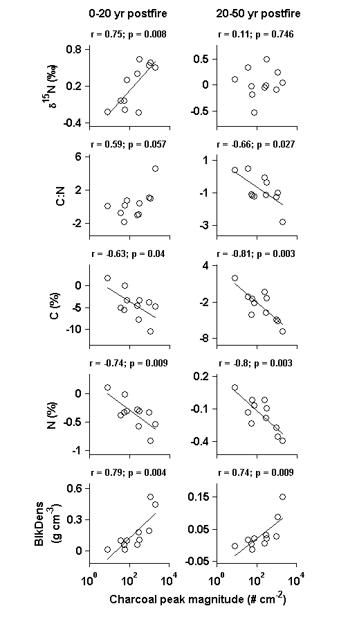
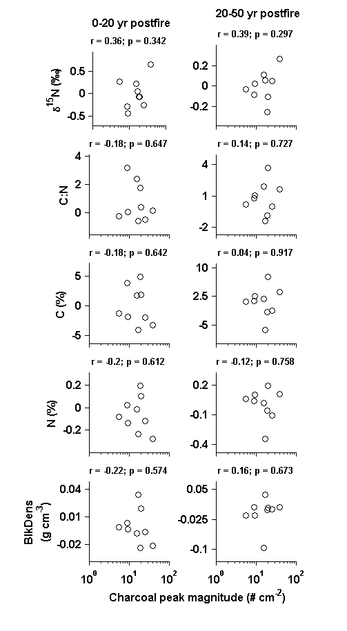

Contents
- Fig_6_S4_script.m
- Set working directories: directories where input data are located
- User-set parameters, for SEA.m and plotting
- Load data and create variables
- Define response series
- Interpolate and smooth response series, and calculate residuals
- Manually input event dates and index for peak magnitude values
- Create event series equal in length to interpolated series
- Create series for correlations, HSCF
- Create series for correlations, LSEF_hiRes
- Plot results
Fig_6_S4_script.m
Make Figure 6 and Figure S4 from: Dunnette P.V., P.E. Higuera, K.K. McLauchlan, K.M. Derr, C.E. Briles, M.H. Keefe. 2014. Biogeochemical impacts of wildfires over four millennia in a Rocky Mountain subalpine watershed. New Phytologist Accepted.
Figure 6. Relationships between charcoal peak magnitude and the proxy responses following high-severity catchment fires. Pearson correlation coefficients (r) were calculated using the log-transformed peak magnitude of each fire event and mean residual response variable values ~0-20 years (left column) and ~20-50 years (right column) after each event. Bulk density is abbreviated by “BlkDens.”
Fig. S4. Relationships between charcoal peak magnitude and proxy responses for lower severity/extra local fires. Pearson correlation coefficients (r) were calculated using the log-transformed peak magnitude of each fire event and mean residual response variable values ~0-20 years (left column) and ~20-50 years (right column) after each event. Compare to Fig. 6 in the main text.
FILE REQUIREMENTS: (1) CH10_biogeochemData.csv -- Biogeochemcial data from Chickaree Lk. (2) CH10_charResults.csv -- CharAnalysis results from Chickaree Lk.
DEPENDENCIES: (1) smooth.m -- Matlab function in the curvefit toolbox (2) corr.m -- Matlab function in the statistics toolbox (3) regress.m -- Matlab function in the statistics toolbox
CITATION, FILES, AND SELF-AUTHORED FUNCTIONS AVAILABLE FROM FigShare Higuera, P.E. and P.V. Dunnette. 2014. Data, code, and figures from Dunnette et al. 2014. figshare. http://dx.doi.org/10.6084/m9.figshare.988687
Created by: P.V. Dunnette Created on: March, 2013 Updated: May, June, 2013, by PVD Edited: 25 Jan., 2013, by P.E. Higuera Edited: April, 2014, edited for publication by P.E. Higuera
University of Idaho, PaleoEcology and Fire Ecology Lab http://www.uidaho.edu/cnr/paleoecologylab phiguera@uidaho.edu
clear all
Set working directories: directories where input data are located
%%%% IF ALL FILES ARE LOCATED IN THE SAME DIRECTORY AS THIS SCRIPT, CHANGE %%%% workdingDir to 'pwd' startDir = pwd; % Record starting path workingDir = 'L:\4_archivedData\Dunnette_et_al_2014\CH10_biogeochem\'; workingDir2 = 'L:\4_archivedData\Dunnette_et_al_2014\CH10_charcoal\';
User-set parameters, for SEA.m and plotting
params.interpValue = 5 ; % [yr] Years to interpolate to params.smWindow = 500 ; % [yr] Years to smooth to yrCutOff = [-57 4300]; % [cal yr BP] Years to use in the analysis
Load data and create variables
cd(workingDir) % Change to working directory data = csvread('CH10_biogeochemData.csv',1,4); % Biogeochemical data colName = {'topCm';'botCm';'topAge';'botAge';... ['\delta^1^5N (' char(8240) ')']; 'N (%)';... ['\delta^1^3C (' char(8240) ')']; 'C (%)'; 'C:N';... [' BlkDens ';'(g cm^{-3})'];... [' C_a_c_c ' ; '(g cm^{-2} yr^{-1})']}; % Column headers, % and units cd(workingDir2) charData = csvread('CH10_charResults.csv',1,0); peakMag = charData(:,21); % [#/cm^2] Peak magnitudes charYbp = charData(:,2);%-0.5*mean(diff(charData(:,2))); % [cal yr BP] % Mid-depth interpolated age cd(startDir) % Change directory back to starting directory.
Define response series
in = [5 9 8 6 10]; % Index for response vars., from data response.x = mean(data(:,3:4),2); % [cal yr BP] Mid-sample age of % samples; redefined three lines below in2 = find([(response.x >= yrCutOff(1)) .* (response.x <= yrCutOff(2))]); % Index for all samples within desired age range, defined by yrCutOff response.x = mean(data(in2,3:4),2); % [cal yr BP] Mid-sample age of samples response.y = data(in2,in); % Response time series; units are in % params.responseName. response.n = length(in); % Number of response series. response.name = colName(in); % Name and units for each response var.
Interpolate and smooth response series, and calculate residuals
response.xi = [yrCutOff(1):params.interpValue:max(response.x)]';
% [cal yr BP] Interpolated x values
response.yi = interp1(response.x,response.y,response.xi); % Interpolated
% response series; units as in y
response.ySm = NaN*ones(size(response.yi)); % Space for smoothed
% response series
for i = 1:response.n
response.ySm(:,i) = smooth(response.yi(:,i),... % Lowess smoother,
params.smWindow/params.interpValue,'rlowess'); % robust to outliers.
end
response.residuals = response.yi - response.ySm; % Residuals after removing
% long-term trends from interpolated response variables
Manually input event dates and index for peak magnitude values
Criteria for events: 99.9 percentile CHAR pks, 99.9 percentile MS pks. 75 years was the minimum allowable time between consecutive events. Coincident events at 3316 and 4179 cal yr BP were excluded, owing to their proximity to the 3262 and 4156 cal yr BP fire, respectively. Including these events did not significantly alter the results.
Index finds peak magnitude value that is closest to the event.
HSCFin = [23 102 131 219 274 282 297 333 379 386 422]; % Index for % HSCF, defined by CharAnalysis output, in Fig_3_script.m. nHSCF = length(HSCFin); % sample size for HSCF HSCF = [161 960 1243 2124 2670 2752 2913 3262 3725 3803 4156]; % [cal yr BP] High-severity catchment fires (n = 11). Based on output % from Fig_3_script.m and altered manually for more precise fire yr. % Used for Fig. 6 LSEF_hiResIn = [30 59 170 194 224 257 318 346 393]; % Index for % LSEF_hiRes, defined by CharAnalysis output, in Fig_4_5_script.m. nLSEF_hiRes = length(LSEF_hiResIn); % sample size for LSEF_hiRes LSEF_hiRes = [230 521 1637 1875 2177 2508 3116 3396 3863]; % [cal yr BP] Lower severity, extra local fires (LSEF) with high % resolution analysis (n = 9) % Used for Fig. S4
Create event series equal in length to interpolated series
events = zeros(length(response.xi),2); % Space for binary % event series, where 1 = event, and 0 = no event, First row = HSFC, % second row = LSEF_hiRes for i = 1:nHSCF in = find(abs(response.xi - HSCF(i)) ==... min(abs(response.xi(:,1) - HSCF(i)))); % Find the index value % that minimizes the difference between the year of the event and % the closest matching year in the interpolated response series. % This accommodates event and response series with differing x % values. events(in,1) = 1; % Make this value 1 end for i = 1:nLSEF_hiRes in = find(abs(response.xi - LSEF_hiRes(i)) ==... min(abs(response.xi - LSEF_hiRes(i)))); % Find the index % value that minimizes the difference between the year of the event % and the closest matching year in the interpolated response % series. This accommodates event and response series with differing % x values. events(in,2) = 1; % Make this value 1 end
Create series for correlations, HSCF
x = peakMag(HSCFin); % [#/cm^2] Peak magnitude, for peaks associated % with high severity catchment fires. y = NaN(length(x),response.n,2); % Space for response variables, where % i = average response to each event, and j = % temporal window (0-20 yr for j = 1, 20-50 for % j = 3). responseIn = find(events(:,1)); % Index for events, in response variables. eventBin1 = [-3:0]; % Sampling window, 0-20 yr (negative = post-fire) eventBin2 = [-9:-4]; % Sampling window, 20-50 yr post fire. for i = 1:length(x) in1 = [responseIn(i) + eventBin1]; % Index for 0-20 yr post fire in2 = [responseIn(i) + eventBin2]; % Index for 20-50 yr post fire y(i,:,1) = mean(response.residuals(in1,:)); y(i,:,2) = mean(response.residuals(in2,:)); end
Create series for correlations, LSEF_hiRes
x2 = peakMag(LSEF_hiResIn); % [#/cm^2] Peak magnitude, for peaks associated % with lower severity, extra local fires. y2 = NaN(length(x2),response.n,2); % Space for response variables, where % i = average response to each event, and j = % temporal window (0-20 yr for j = 1, 20-50 for % j = 3). responseIn = find(events(:,2)); % Index for events, in response variables. eventBin1 = [-3:0]; % Sampling window, 0-20 yr (negative = post-fire) eventBin2 = [-9:-4]; % Sampling window, 20-50 yr post fire. for i = 1:length(x2) in1 = [responseIn(i) + eventBin1]; % Index for 0-20 yr post fire in2 = [responseIn(i) + eventBin2]; % Index for 20-50 yr post fire y2(i,:,1) = mean(response.residuals(in1,:)); y2(i,:,2) = mean(response.residuals(in2,:)); end
Plot results
fs = 10; % Font size for figures subplotIn = [1:2:response.n*2]; % Index for subplots for k = 1:2 % For HSCF and for LSEF_hiRes if k == 1 figure(6) set(gcf,'color','w','units','centimeters','position',[5 0 11 20]); xPlot = x; yPlot = y; x_lim = ([1 10000]); % x-axis limit x_tick = [1 100 10000]; % x-axis tick marks else figure(7) set(gcf,'color','w','units','centimeters','position',[5 0 11 20]); xPlot = x2; yPlot = y2; x_lim = ([1 100]); % x-axis limit x_tick = [1 10 100]; % x-axis tick marks end for j = 1:response.n % For each response variable... for i = 1:2 % For each time window post fire... % Select subplot if i == 1 subplot(response.n,2,subplotIn(j)) else subplot(response.n,2,subplotIn(j)+1) end % Pearson correlation coefficient for x vs. y: [rho,p] = corr(log(xPlot),yPlot(:,j,i)); b = regress(yPlot(:,j,i),[ones(size(xPlot)),log(xPlot)]); xHat = [min(log(xPlot)), max(log(xPlot))]; % Predicted x-values yHat = b(1) + b(2).*xHat; % Predicted y-values % Plot x and y, with x-axis on log scale: semilogx(xPlot,yPlot(:,j,i),'ok') hold on if p < 0.05 % If correlation is significant, plot best-fit line semilogx(exp(xHat),yHat,'-k') end % Set axis properties: y_lim = [min(yPlot(:,j,i))-0.25*range(yPlot(:,j,i))... max(yPlot(:,j,i))+0.25*range(yPlot(:,j,i))]; set(gca,'xtick',x_tick,'ylim',y_lim,... 'FontSize',fs','FontWeight','bold','tickdir','out',... 'ticklength',[0.05 0.1],'xlim',x_lim) y_tick = get(gca,'ytick'); if length(y_tick) > 3 y_tick = [min(y_tick) min(y_tick)+0.5*range(y_tick) max(y_tick)]; set(gca,'ytick',y_tick) end axis square box off % Titles and labels: title({['r = ' num2str(round(rho*100)/100) '; p = ' num2str(round(p*1000)/1000)]},... 'FontSize', fs-2) if i == 1 ylabel(response.name(j),'fontsize',fs,'FontWeight','Bold') end if j < response.n set(gca,'xticklabel',' ','FontWeight','Bold') end % Change size of subplot: p = get(gca,'position'); p(4) = p(4)+0.0025; p(3) = 0.3347; if i == 1 p(1) = p(1)+0.075; end set(gca,'position',p); % Place column title above row 1 if j == 1 if i == 1 text(x_lim(1),y_lim(2)+0.4*range(y_lim),... '0-20 yr postfire','HorizontalAlignment',... 'Left','FontSize',fs,'FontWeight','bold'); else text(x_lim(1),y_lim(2)+0.4*range(y_lim),... '20-50 yr postfire','HorizontalAlignment',... 'Left','FontSize',fs,'FontWeight','bold'); end end end % End loop for each time window end % End loop for each variable xlabel('Charcoal peak magnitude (# cm^{-2}) ',... 'FontSize',fs,'FontWeight','b') end 